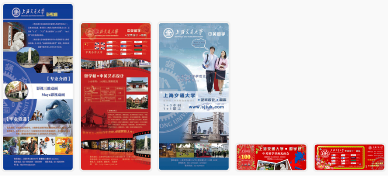

陈琦的个人履历
| 项目11：HotNest入海项目［团队项目］ | |||||
|---|---|---|---|---|---|
| 项目角色 | CTO | ||||
| 项目愿景 |
HotNest 入海项目是海外消费品牌进入中国的桥梁与平台。 基于自主研发的数字化平台，深度参与国际品牌在中国市场的运营管理赋能，提供消费者洞察、商业数据智能分析与可视化、物流、线上线下零售、渠道分销等一站式运营管理云服务；同时为中国消费者分享海外优选商品，满足国内消费升级需要。 充分发挥平台优势，立志成为海外品牌进中国的首选战略伙伴，并成为广大中国消费者选择高品质、高性价比海外商品的首选平台。 |
||||
| 项目描述 |
根据项目需求我们开发了多套系统提供给不同角色使用 一、HotNest 入海官网-PC端/移动端（前台场景化）测试期：洞察中国市场环境 帮助品牌健康增长。其中包括入海意向沟通、产品测试、产品报告 加速期： 各个方面扶持品牌，在中国快速成长。进入加速期后，我们会在进入准备阶段进行SKU选品、制定营销计划、业绩预估及费用预算 成熟期：落地中国，深耕中国市场。 二、品牌方工作台数据概览：展示品牌方销售数据、销售趋势、商品排名、社交趋势。 销售管理： 【产品列表】主要是商品库存、销量、销售额、上架平台、商品趋势、及库存管理；【结算】主要用以给品牌方月末结算，通过国际支付宝的账单数据导入到系统，系统自动统计每日订单及单件产品的销售明细。 大数据： 【社交数据】用于品牌的社交投放分析，总社交数据、近期互动变化、近30天的点评转藏的情况、品牌方相关推文详细数据。 文档库： 类似于品牌方和品牌运营之间的云共享，主要用于品牌方提供产品及电商平台需要的原始素材，运营方为品牌方提供每月的品牌运营报告等 销售大屏看板：提供销售节日的实时销售数据情况。 三、HotNest 中台(主要提供给品牌管理以及品牌运营人员使用)我的品牌： 管理测试期、加速期的品牌，测试期主要是品牌授权管理、社交数据和竞品电商数据、市场分析报告、品牌落地计划。 渠道管理： 【渠道相关】提供客户登记、沟通管理、合同管理、线下采销订单管理。【供销平台】主要对接天猫供销平台API接口，展示供销店铺信息详情、供销订单情况。 采集管理： 根据制定关键词、指定产品、指定链接等方式提交采集需求。系统根据提交的需求，会进行相关的数据采集分析处理，得出有序的数据展示。 营销号分析： KOL管理平台，统计各个热门平台KOL的综合数据，提供给市场投放人员参考KOL与品牌推广产品的切合度。 |
||||
| 硬件环境 | 阿里云服务器集群 | 软件环境 | docker、win、centos、apache、nginx、php、python、mysql、spark、cassandra、sorl | ||
| 开发工具 | phpstorm、pystorm、sequel pro、devcenter... | 开发周期 | 2019-10 to 2012-10 （3年） | ||
| 技术架构 | 前台采用Angular.js、Bootstrap、ECharts等框架；后台使用Yii2、Django、sorl；数据库使用mysql、cassandra、redis；数据使用Scrapy、spark、阿里云的容器服务DSE集群；WEB服务器采用docker nginx php uwsgi。 | ||||
| 项目特点 | 采集大量社交和电商数据，用作品牌的竞品大数据分析，提供给品牌方和运营方做出品牌落地营销决策。平台使用用户分布在国内和海外，采用全站dcdn加速，前后端分离，微服务架设。 | ||||
| 项目业绩 | HotNest入海平台总入驻海外品牌35个，进入加速期的有4个；测试产品SUK有200+。渠道管理中供销店铺63个，渠道客户20+。根据用户使用反馈，进行版本迭代，功能更新和系统优化。得到品牌方和运营人员的好评，加强了品牌与运营之间的沟通与数据管理。 | ||||
| 项目10：池外TRY［团队项目］ | |||||
|---|---|---|---|---|---|
| 项目角色 | CTO | ||||
| 项目背景 |
随着公司业务不断提供，海外品牌入驻越多，海外试用的产品也越来越多，由之前的公司内部人员测试，延伸到身边人的试用。于是本人向公司领导提出技术部门可以做一个试用平台。从平台的取名，到 商标的注册 ，到技术的选型。于是便有了“池外TRY”这个微信小程序。并且在2021年07月01日上线内测，我们邀请了50位用户作为我们的种子用户。 |
||||
| 项目描述 |
0元试用： 提供给用户免费/付运费等方式参与活动，申请试用品的试用（活动类型：普通活动、邀请必中活动、拉新活动等）。 精选专栏：主要是海外优质小众品牌/产品的专题或优质测评，让更多的国内消费者了解这些小众产品的特性。 讨论区：主要展示用户体验产品后的试用报告。其中包括评论和问答模块。 品牌博物馆： 通过海外亚马逊及海外其他美妆板块采集了10W+的产品信息。通过数据清洗，将符合池外调性的产品录入到品牌博物馆下面。提供给用户查看商品介绍，若用户推荐该商品就进入我们的推荐榜单。 鱼泡泡商城： 当用户参与活动，签到，提交试用报告等获得鱼泡泡，通过鱼泡泡可以在商城中兑换试用品。主要用来提供用户的日活和黏性。 |
||||
| 硬件环境 | 阿里云服务器集群 | 软件环境 | docker、win、centos、nginx、python、mysql、WeChat mini program | ||
| 开发工具 | VSCode、Pycharm、Navicat ... | 开发周期 | 2021-03 to 现在 | ||
| 技术架构 | 前台采用 Taro、VUE.js 等框架；后台使用Django；数据库使用mysql、阿里云的容器服务DSE集群；WEB服务器采用docker nginx uwsgi。 | ||||
| 人员分工 |
本项目主要参与人共5名：1名产品经理、1名用户/活动运营、1名UI设计师、1名前端工程师、1名后端工程师。 我主要负责项目的整体把控，活动策划的审查，功能模块的评审，以及试用品与公司国际业务部的协调。 |
||||
| 项目业绩 | 在小程序上线后我们开发了邀请必中活动。上架了一些用户好品价值高的商品，促使老用户拉新用户注册并参与我们的普通活动。3个月中快速的积累了5000的注册用户。在后面我们又开发了拉新活动，以女神节主题为契机，第一次策划了该活动。活动日当天就注册新用户700+人。在小程序上线6个月后我们进行了对该项目的整体复盘，对当前用户画像进行分析，也对我们该项目的愿景、人群定位、盈利方式等方面进行了讨论。 | ||||
| 项目9：AI智能营销解决方案平台［团队项目］ | |||||
|---|---|---|---|---|---|
| 项目角色 | CTO | ||||
| 项目描述 |
供应商匹配： BD人员海量拓展供应商，录入供应商库。销售获取大量公司的需求形成销售线索。我们根据需求方的需求和供应商库的评分进行算法匹配。使服务商的服务能满足客户需求进行项目合作。 营销数据监控： 运用数据团队的分析结果，可以为用户的KOL投放提供从开始到结束的全生命周期的营销支持。作为实时监控工具，达成用户的的营销目标。 营销咨询服务：通过“数据+平台+咨询”的方式，为品牌数字化升级提供全生命周期服务 供应商：HotNest 拥有完善的供应商体系,立足于北上广深等一线城市，范围辐射全国多个重点城市。涉猎范围涵盖品牌咨询、广告传播、公关传播、媒介传播、数字营销、事件营销、会展营销等多维度服务，一站解决用户的多元化营销需求。 AI智能供应商匹配： AI智能供应商匹配系统，帮助用户在短时间内，对接上匹配度较高的营销供应商，节约再此过程中的低效寻找，无效沟通，提供工作效率。同时，平台保证每一个匹配供应商的合法合规资格，进一步让用户无后顾之忧。 营销工具：营销数字工具， 基于大数据和人工智能的算法分析，帮助用户认识和了解自己的受众群体画像，分析目标用户的喜好，偏好，以及各种属性分类，便于精准定位自己的受众群体。同时还可以监测投放后的KOL数据情况和反响。为内容制作和传播策略提供数据反馈。 行业数据报告： 人为了解到所在行业的微观市场，市场中的假象经常误导用户对行业发展全局的判断和把握。生产行业实时数据报告，通过数据获取、清洗和分析，为用户提供行业时时的数字信息报告。在品牌进行营销活动之前，了解行业/产品的当前的热点信息 、用户关注的内容、舆论状态等信息。以辅助品牌在做营销类型选择、营销内容制定中具备决策依据。 |
||||
| 硬件环境 | 阿里云服务器 | 软件环境 | win、centos、apache、nginx、php、mysql | ||
| 开发工具 | VSCode、 phpstorm | 开发周期 | 2017-06 to 2019-06 （2年） | ||
| 技术架构 | 前台采用AngularJS、Ionic框架；后台使用Yii2、Yii2-restful API；数据库使用mysql；WEB服务器采用docker nginx php | ||||
| 项目业绩 | AI 智能营销平台，上线后吸引了 2000+ 的优质服务商入驻，为 1W+ 的用户提供工了营销智能咨询服务。平台随着用户增多，引入了在线 IM 服务，用户和服务商可以直接在线沟通，快速精准的达成合作。 | ||||
| 项目8：热巢社交分析系统［团队项目］ | |||||
|---|---|---|---|---|---|
| 项目角色 | 全栈工程师 | ||||
| 项目描述 |
一、热巢实时系统二、热巢社交分析系统社交媒体内容数据、微博/微信榜单、关键词排行、关键词情感分析、KOL画像、人群画像、需求图谱 三、阳狮数据系统全网关键词项目（API接口）四、Socialbakers项目（API接口）五、创业邦项目（管理端、展示端）六、5i美食项目 |
||||
| 硬件环境 | 阿里云服务器集群 | 软件环境 | docker，win、centos、apache、nginx、php、mysql、spark、cassandra、sorl | ||
| 开发工具 | phpstorm、sequel pro、devcenter... | 开发周期 | 2016-07 to 2018-08 （2年+） | ||
| 技术架构 | 前台采用Bootstrap、ECharts等框架，后台使用Yii2、sorl，数据库使用mysql、cassandra、redis；数据使用Scrapy、spark、阿里云的容器服务DSE集群，WEB服务器采用docker nginx php。 | ||||
| 项目业绩 | 通过实时系统监控10多家社交媒体平台的全网数据，分析热点趋势。通过分析结果，监控微博/微信2W+ KOL账号的发文数据，采集每篇推文的评论进行正负面情绪评分。通过词频来计算热门关键字以及词云。有了上面的 技术和数据积累，与 阳狮集团合作，提供全网关键词API接口给对方数据系统。并与国外Socialbakers 数据系统合作（Emplifi），提供微信/微博/抖音/优酷的KOL账号的阅读点赞收藏评论等各项数据30天变化趋势，进行广告投放效果监控参考数据。通过与创业邦合作，我们开发了一套，采集国内各个公司融资情况的新闻，进行数据清洗分析，得出每家公司的ABCD轮的融资情况。 | ||||
| 项目7：北京航空航天大学远程教育系统［团队项目］ | |||||
|---|---|---|---|---|---|
| 项目角色 | 项目经理&前端开发 | ||||
| 项目描述 |
一、北京航空航天大学现在远程教育网上报名系统二、北航上海学习中心官网三、北航校本部学生考试科目时间教室查询系统四、北航学位英语报名系统五、北航考务平台六、北航教务平台七、北航在线考试系统（pc端、学生移动端）八、北航毕业证书学位证书打印系统 |
||||
| 硬件环境 | Dell R720 服务器、阿里云RDS数据库 | 软件环境 | win、centos、apache、php、mysql | ||
| 开发工具 | ps、sublime text 2、MindManager、Axure | 开发周期 | 2012-05 to 2015-08 （3年+） | ||
| 项目业绩 | 在当时首家采用身份证读取 的方式，录入学生报名信息。以此为契机，与北航高度合作。搭建了北航的报名系统、学生管理平台、教务平台、在线机考平台、毕业证书打印系统。公司负责华东华中的各个地区30多家学习中心的管理。约招生20W+，其中最高单学期招生达5W人。该系统提供学生从入学到毕业的教务管理服务。 | ||||
| 项目6：双威教育平台［团队项目］ | |||||
|---|---|---|---|---|---|
| 项目角色 | 项目经理&前端开发 | ||||
| 项目描述 |
一、北京双威教育网站二、上海电力远程教育培训平台网站三、真正好学员管理平台四、上海市职工职业进修学校企业网站五、交大学生上机考试作业提交系统 |
||||
| 硬件环境 | 阿里云ECS服务器 | 软件环境 | win、centos、nginx、apache、php、mysql | ||
| 开发工具 | ps、sublime text 2、Axure | 开发周期 | 2011-03 to 2012-12 (1年+) | ||
| 项目业绩 | 通过远程教育平台与上海交通大学、同济大学 远程教育合作、在上海/北京建立学习中心与高校合作招生，公司组建了自己的研发中心。与电力学院 进行了技术合作搭建了一个上海远程教育培训的在线平台，是当时最早的mooc概念 。与真正好公司合作搭建了一套，儿童作业管理平台。让学生父母与学校可以实时检查孩子的作业情况。与上海交通大学合作，为学生上机考试作业搭建了一套机房作业提交系统。 | ||||
| 项目5：家庭农场管理平台［团队项目］ | |||||
|---|---|---|---|---|---|
| 项目角色 | 产品经理&后端开发 | ||||
| 项目描述 |
一、家庭农场台账管理系统二、农民专业合作社财务软件系统 |
||||
| 硬件环境 | 阿里云服务器集群 | 软件环境 | docker，win、centos、apache、nginx、php、mysql、spark、cassandra、sorl | ||
| 开发工具 | phpstorm、sequel pro、devcenter... | 开发周期 | 2017-08 to 2019-10 （2年+） | ||
| 技术架构 | 前台采用Bootstrap、Angular.js等框架；后台使用Yii2、；数据库使用mysql；阿里云的容器服务DSE集群，WEB服务器采用docker nginx php。 | ||||
| 负责内容 | 产品需求确定、数据库表设计、编写后端API接口、服务器搭建项目部署、程序更新维护。 | ||||
| 项目业绩 | 通过2年的时间，搭建了一套农业家庭农场台账管理平台和农民合作社财务系统，为10多个县市提供了农业新型经营服务系统，现有系统拥有1000+帐套。并且该系统取得了软件著作权。 | ||||
| 项目4：上海安朴资本官网［个人开发］ | |||||
|---|---|---|---|---|---|
| 项目角色 | 产品经理&全栈开发 | ||||
| 项目描述 |
一、引导页二、走进安朴安朴简介、投资理念、投资逻辑、投资风格、投资策略 三、投资案例四、关注安朴五、联系我们 |
||||
| 硬件环境 | 阿里云ECS服务器 | 软件环境 | win、centos、apache、php、mysql | ||
| 开发工具 | ps、sublime text 2 | 开发周期 | 2017-06 to 2017-08 (2个月) | ||
| 负责内容 | 前期需求沟通、页面设计、页面切片、后端编写、服务器搭建。 | ||||
| 项目业绩 | 根据客户老板需求，进行沟通确定栏目。确定栏目后、通过客户提供的logo进行首页及内页的设计。然后完成前后端开发，并为客户选择服务器和搭建服务，网站内容维护。[前往官网] | ||||
| 项目3：P2P金融项目［合作项目］ | |||||
|---|---|---|---|---|---|
| 项目角色 | 前端工程师 | ||||
| 项目描述 |
搬金网是一家新成立的互联网投资理财服务平台，通过凑份子的方式帮助您把闲钱在互 联网上投资或出借给企业等，并获取多样性的投资回报（利息、股权、实物、服务）。 开发周期：2014/05-2015/03（10个月） 云鲤鱼 是第一家远程学历教育学费分期的助学平台，致力于向人们提供一个“透明、高效、安全、可靠、共赢”的p2p电子商务平台，旨在通过电子商务形式，改变一次性缴清学费的传统教育缴费模式，促进相关教育产业升级。 开发周期：2017/06-2017/08（2个月） |
||||
| 硬件环境 | 阿里云ECS服务器 | 软件环境 | win、centos、apache、php、mysql | ||
| 开发工具 | ps、sublime text 2、Axure | ||||
| 负责内容 | 讨论网站业务流程，制作网站原型，网站设计稿切片，代码调试，测试bug，线上服务器的配置。 | ||||
| 项目2：香港雅典娜官网［个人开发］ | |||||
|---|---|---|---|---|---|
| 项目角色 | 产品经理&全栈开发 | ||||
| 项目描述 |
一、关于我们二、新闻与资讯三、品牌及产品四、工程案例五、下载专区六、联系我们七、新品快递 |
||||
| 硬件环境 | 阿里云ECS服务器 | 软件环境 | win、centos、apache、php、mysql | ||
| 开发工具 | ps、sublime text 2 | 开发周期 | 2015-05 to 2015-06 | ||
| 责任描述 | 根据网站模块，进行设计首页，提交给老板确认，进行首页修改，设计各个栏目页面，最终确定网站设计页面，进行切片，然后使用Yii编写程序，设计后台管理模块，购买阿里云ecs主机，搭建lamp服务器，进行域名解析，网站上线。使用cnzz进行网站访问统计。 | ||||
| 项目1：设计高校招生简章/易拉宝［个人设计］ | |||||
|---|---|---|---|---|---|
| 项目角色 | UI设计师 | ||||
| 开发工具 | ps、ai | 开发周期 | 一个月 | ||
| 责任描述 | 负责将word文档的内容，设计为宣传页及易拉宝。[查看作品] | ||||
| 项目业绩 |  | ||||